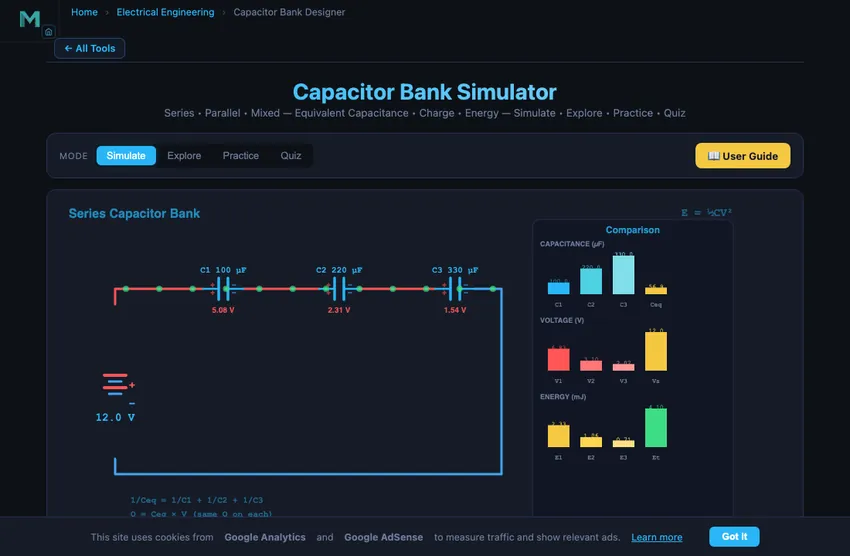

Capacitor Bank Simulator
Series • Parallel • Mixed — Equivalent Capacitance • Charge • Energy — Simulate • Explore • Practice • Quiz
3D Model — Alternate Energy Elective: EV Battery Supercapacitors
Interactive 3D model of this apparatus. Pick a component on the right, then drag to rotate · scroll to zoom · right-drag to pan.
Σ Live equations — values substituted from current state
💡 What-if coach — insights from current values
1 Overview
The Capacitor Bank Simulator lets you build series, parallel, and mixed capacitor configurations and observe how charge, voltage, and energy distribute across each component. You can calculate equivalent capacitance (Ceq), total charge (Q), total energy stored (E = ½CV²), individual capacitor voltages, and individual charges in real time. The canvas displays animated charging behaviour and colour-coded charge distribution.
This tool is designed for electrical engineering students studying circuit analysis, power systems engineers working with power factor correction capacitor banks, electronics technicians designing filter circuits, and physics learners exploring electrostatic energy storage and reactive power compensation.
2 Building the Circuit
The simulator opens in Simulate mode with a series configuration: C1 = 100 μF, C2 = 220 μF, C3 = 330 μF, and Vsupply = 12 V. To begin:
- Choose the number of capacitors (1–6, default 3) with the Capacitors selector — a slider is generated for each.
- Select a Configuration: Series (capacitors in a chain), Parallel (capacitors across the same two nodes), or Mixed.
- In Mixed, choose the number of Series groups: the capacitors split as evenly as possible into that many series-connected groups, with the capacitors inside each group wired in parallel. 1 group = all parallel, N groups = all series, and anything in between gives a series-parallel array (e.g. 3 series × 2 parallel).
- Adjust each C1…Cn slider (1–1000 μF each) to set individual capacitance values, or type an exact value in its box.
- Change the Vsupply slider (1–24 V) to modify the charging voltage.
- Toggle Show Charges and Animate Charging for visual feedback.
- Try Presets: Equal Series, Equal Parallel, Filter Bank, or Power Factor correction.
3 Energising the Circuit
Simulate mode provides the interactive capacitor bank workspace. The canvas shows the circuit schematic with animated charge distribution. Key controls:
- Configuration pills: Series gives 1/Ceq = 1/C1 + 1/C2 + 1/C3 (Ceq always less than the smallest capacitor). Parallel gives Ceq = C1 + C2 + C3 (Ceq always greater than any single capacitor). Mixed combines both topologies.
- C1, C2, C3 sliders: Set individual capacitances. In series, all capacitors store the same charge Q but voltage divides inversely with capacitance. In parallel, all capacitors see the same voltage but charge distributes proportionally to capacitance.
- Vsupply slider: Changes the applied voltage. Energy stored scales as V², so doubling voltage quadruples energy.
Readout cards display: Ceq, Qtotal, Etotal, Vsupply, plus individual voltages (VC1, VC2, VC3), charges (QC1, QC2, QC3), and energies (EC1, EC2, EC3) for each capacitor.
4 Circuit Theory
Explore mode organises capacitor theory into two categories:
- Basics: Covers capacitance definition (C = Q/V), parallel plate capacitor formula (C = εA/d), dielectric materials, energy storage (E = ½CV²), and the relationship between charge, voltage, and capacitance.
- Combinations: Explains series capacitor banks (same charge, voltage divides), parallel banks (same voltage, charge distributes), mixed configurations, and practical applications including power factor correction, pulse power systems, and capacitor voltage dividers.
Select any concept card for detailed explanations with formulas and interactive canvas illustrations.
5 Try a Problem
Practice mode generates problems such as: “Three capacitors of 100, 220, and 330 μF are connected in series. Find Ceq”, “A 470 μF capacitor is charged to 15 V. Calculate the energy stored in millijoules”, or “In a series bank, if Q = 500 μC and C1 = 100 μF, find VC1.” Enter your answer and receive step-by-step feedback.
Quiz mode tests your knowledge with 15 multiple-choice questions covering series and parallel capacitance, energy storage, charge distribution, voltage division, and practical capacitor bank applications. Review your score and detailed explanations at the end.
6 Tools, Export & Keyboard Shortcuts
- Editable inputs: Type an exact value into any C1/C2/C3/Vsupply number box, or drag the slider — both stay in sync.
- Live equations panel: The collapsible Learning panels below the readouts render the active configuration’s formulas (Ceq, Q, E, voltage/charge division) in classical notation with your current values substituted, plus a What-if coach with insights.
- Show Calculations: Click the calculator button on the canvas to open a step-by-step derivation of equivalent capacitance, total charge, energy, and per-capacitor voltage/charge in SI units.
- Export: Use the action bar to export results as CSV (all values) or the circuit diagram as a PNG image for study sheets and reports.
- Right-click the circuit canvas for a context menu: Copy Ceq, Export PNG/CSV, toggle charges, and reset charging.
- Keyboard shortcuts: Ctrl+Z undo, Ctrl+Shift+Z redo, R reset. Undo/Redo also have buttons in the action bar.
- Sound: Practice and Quiz modes play a short tone on correct/incorrect answers (generated in-browser, no files).
7 Field Tips
- In series, the smallest capacitor determines Ceq (it is always less than the smallest value). In parallel, capacitances simply add up.
- Series capacitors share the same charge Q but the smallest capacitor gets the highest voltage — this is important for voltage rating considerations.
- Parallel capacitors share the same voltage, so the largest capacitor stores the most charge and energy.
- Try the Power Factor preset to see how capacitor banks are used in industrial power systems to compensate reactive power and improve power factor.
- Energy scales with V²: doubling the supply voltage from 6 V to 12 V quadruples the total stored energy.
- For the mixed configuration, identify which capacitors are in series and which are in parallel, then simplify step by step — just like solving a resistor network.
- Use the individual readout cards (VC1, QC1, EC1) to verify your manual calculations against the simulator’s results.
Understanding Capacitor Banks — Free Interactive Series & Parallel Simulator

A capacitor bank is a group of capacitors connected together in series, parallel, or mixed configurations to achieve a desired equivalent capacitance, voltage rating, or energy storage capacity. Capacitor banks are used extensively in power systems for power factor correction, in electronics for energy storage and filtering, and in pulse power applications like defibrillators and laser systems. This interactive simulator lets you build series, parallel, and mixed capacitor circuits with one to six capacitors and observe how charge, voltage, and energy distribute across each component in real time.
Series Capacitor Banks — Voltage Division
When capacitors are connected in series, the reciprocal of the equivalent capacitance equals the sum of the reciprocals: 1/Ceq = 1/C1 + 1/C2 + 1/C3. The equivalent capacitance is always less than the smallest individual capacitor. All capacitors in series store the same charge Q, but the supply voltage divides among them inversely proportional to their capacitance — the smallest capacitor gets the largest voltage. Series connections are used when a higher voltage rating is needed than any single capacitor can handle.
Parallel Capacitor Banks — Charge Storage
When capacitors are connected in parallel, the equivalent capacitance is the sum: Ceq = C1 + C2 + C3. Each capacitor sees the same voltage (the supply voltage), and the total charge equals the sum of individual charges. The charge on each capacitor is proportional to its capacitance: Q = CV. Parallel banks are the most common configuration for increasing total capacitance in power factor correction and energy storage applications.
Energy Storage in Capacitors
The energy stored in a capacitor is given by E = ½CV², which can also be expressed as E = Q²/(2C) or E = ½QV. In a series bank, although each capacitor stores the same charge, the energy distribution depends on both capacitance and voltage. In a parallel bank, each capacitor stores energy proportional to its capacitance since all share the same voltage. The total energy stored equals the sum of individual energies, which also equals ½CeqVsupply².
Power Factor Correction — The Real Industrial Application
Industrial loads (induction motors, transformers, welders) draw inductive current that lags voltage. This means the apparent power S (VA) exceeds the actual power P (W) by a factor 1/cosφ. Utility companies charge for apparent power because their generators and transmission lines have to carry the full VA. Industrial customers pay penalty rates if power factor drops below about 0.85.
Solution: capacitor banks in parallel with the inductive load. Capacitors draw leading current that cancels the inductive lag, raising power factor toward unity. A 100 kW factory with PF = 0.7 lagging draws 143 kVA from the grid. Add 71 kVAr of capacitor bank: power factor jumps to 0.96, apparent power drops to 104 kVA, monthly electricity bill drops significantly.
Sizing a Power Factor Correction Bank — A Worked Example
A factory draws 100 kW at PF = 0.7 lagging on a 415 V three-phase supply. How much capacitor bank is needed to raise PF to 0.95?
| Step | Working | Result |
|---|---|---|
| Initial reactive power | Q1 = P·tan(arccos 0.7) | 102 kVAr (inductive) |
| Target reactive power | Q2 = P·tan(arccos 0.95) | 33 kVAr (inductive) |
| Capacitor bank needed | Qcap = Q1 − Q2 | 69 kVAr |
| Capacitance per phase (star-connected) | C = Qcap/(3·Vph²·ω) where Vph = 240 V, ω = 314 | ~1270 µF per phase |
| Monthly demand-charge savings (typical) | Roughly proportional to (kVA reduction) at industrial rates | 15−30% on demand portion of bill |
Capacitor banks pay back the investment cost in 1−3 years for medium-to-large industrial customers. Modern installations use automatic step controllers that switch capacitor banks in and out as load varies, keeping PF tightly regulated.
Why Capacitor Banks Need Reactors
Modern factories also have non-linear loads (variable-frequency drives, switching power supplies) that inject harmonics into the supply. Capacitor banks present low impedance at higher frequencies, so harmonics flow into them preferentially. The result: overheated capacitors, blown fuses, premature failure. Solution: add a detuning reactor (inductor) in series with each capacitor bank. The reactor + capacitor combination resonates below the 5th harmonic (the most common offender at 250 Hz on a 50 Hz system), preventing harmonic amplification. Modern PFC installations always include reactors.
References
- IEEE Std 18-2012 — Standard for Shunt Power Capacitors.
- IEC 60831-1 — Shunt power capacitors of the self-healing type for AC systems.
- Bisquerra-Gil, V. et al. — Power Quality in Electrical Systems. McGraw-Hill.
Explore Related Simulators
If you found this Capacitor Bank simulator helpful, explore our Ohm’s Law & DC Circuits simulator, RC Circuit simulator, RLC Circuit simulator, and Wheatstone Bridge simulator for more hands-on electrical engineering practice.